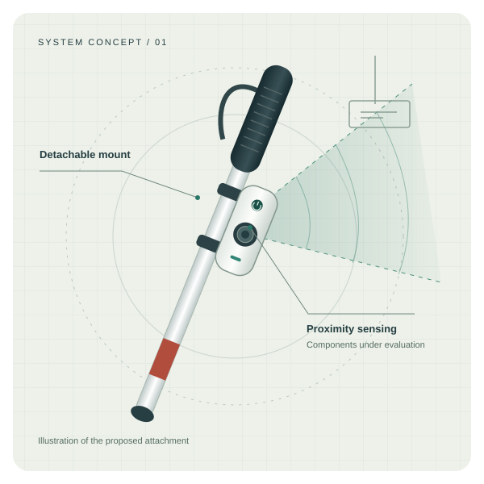

Sense proximity
Compare ultrasonic and time-of-flight sensing for upper-body obstacles in defined indoor and outdoor conditions.
Candidate technologiesSENIOR DESIGN PROJECT · FALL 2026
A detachable white-cane attachment for noticing obstacles at chest and head height.
We are exploring how proximity sensing and understandable feedback can support the familiar way people use a white cane.

01 / THE PROJECT
Design and Development of a Smart Cane Attachment with Obstacle Detection and User Alerting for Visually Impaired Individuals
During an initial visit to an association for people with visual impairments, our team heard that upper-body obstacles were a recurring difficulty. Protruding signs and tree branches are examples of the situations that motivate this project.
Our proposal is a compact module attached to an existing white cane. It will estimate obstacle proximity and communicate alerts through vibration and/or sound. The final sensing and feedback choices will be guided by experiments and user feedback.
The attachment is intended to complement the cane’s established ground-contact function.
02 / PROPOSED APPROACH
A small device with a clear engineering question: can accounting for cane movement reduce unnecessary alerts while preserving timely warnings?
Compare ultrasonic and time-of-flight sensing for upper-body obstacles in defined indoor and outdoor conditions.
Candidate technologiesInvestigate inertial measurements and filtering as the cane changes orientation during a sweeping motion.
Algorithm investigationEvaluate vibration and audible cues, including a more noticeable alert as an obstacle becomes closer.
User-informed interactionDetection and missed obstacles · False alerts · Response time · Added weight · Battery use · Mount stability
Object-type recognition and stair or drop-off detection are possible extensions. The first prototype prioritises upper-body obstacle awareness.
03 / PROJECT DOCUMENTS
Reports and dated planning records, collected in one place for the project’s supervisor and jury.
Project Specifications 23 Oct
Analysis Report 20 Nov
High-Level Design 31 Dec
04 / THE PEOPLE
Four students at TED University, working across sensing, embedded software, interaction and evaluation.
Project team
zeynepece.yilmaz@tedu.edu.trProject team
tuginbugra.bilgic@tedu.edu.trProject team
mert.saglam@tedu.edu.trProject team
onat.genelioglu@tedu.edu.tr05 / DEVELOPMENT PLAN
CMPE 491 establishes requirements and design. Implementation and evaluation continue in CMPE 492.
Dates follow the Fall 2026 course syllabus. Presentation dates remain to be announced.
Project scope and initial literature review prepared.
PreparedRefine requirements, constraints, ethical considerations and the work plan.
PlannedAnalyse system behaviour and evaluation scenarios; update the backlog.
PlannedDocument architecture and subsystem interfaces; update the backlog.
Planned06 / INITIAL READING
Commercial systems and research prototypes inform our scope. The proposal includes the initial literature review.
Upper-body obstacle detection and connected navigation.
02 · FRANCEA detachable module with spatial audio feedback.
03 · INDIAUltrasonic sensing and distance-based vibration patterns.
04 · UNITED STATESA wheeled aid designed to provide physical guidance.
05 · RESEARCH / 2021Robotic sensing and steering in an augmented cane.
06 · RESEARCH / CHINA / 2024LiDAR and RGB-D sensing for navigation and obstacle recognition.